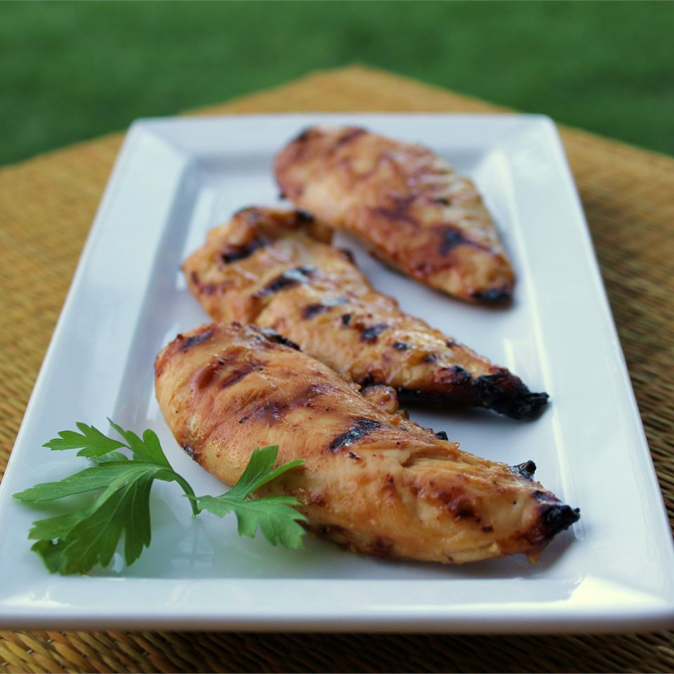

Honey Mustard Grilled Chicken

Description:
''If ye have faith as a grain of mustard seed', ye shall
make and enjoy this simple, tangy, delicious grilled
chicken dish!
Ingredients:
- ⅓ cup Dijon mustard
- ¼ cup honey
- 2 tablespoons mayonnaise
- 1 teaspoon steak sauce
- 4 skinless, boneless chicken breast halves
Steps:
- Preheat the grill for medium heat.
- In a shallow bowl, mix the mustard, honey, mayonnaise,
and steak sauce. Set aside a small amount of the honey
mustard sauce for basting, and dip the chicken into the
remaining sauce to coat.
- Lightly oil the grill grate. Grill chicken over
indirect heat for 18 to 20 minutes, turning occasionally,
or until
juices run clear. Baste occasionally with the
reserved sauce during the last 10 minutes. Watch
carefully to prevent burning!
Go to top of the page
Go back to main page